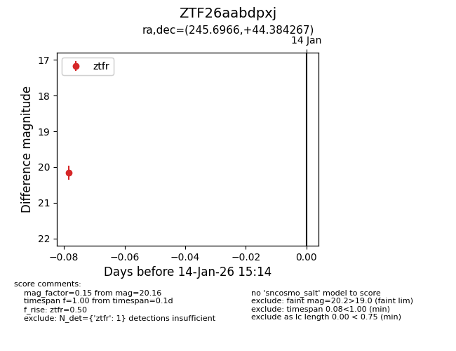
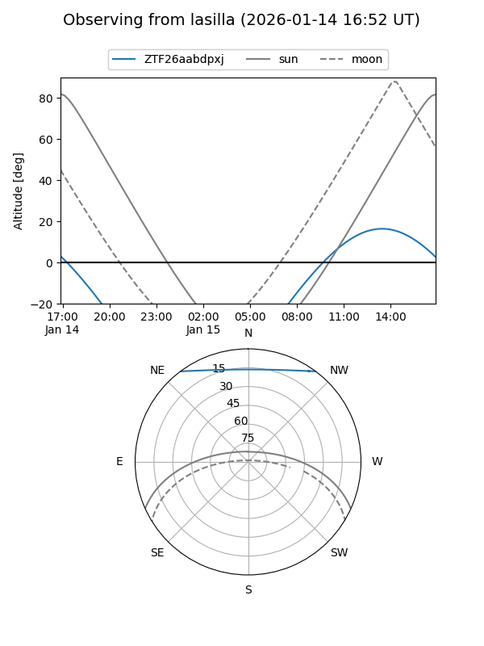
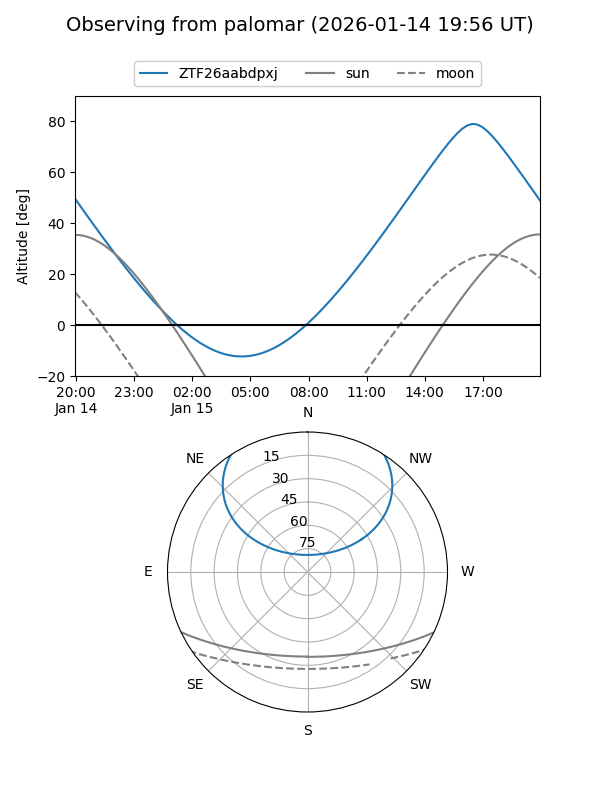

ZTF26aabdpxj
Target ZTF26aabdpxj at 2026-01-14 15:15
Aliases and brokers:
FINK: link
Lasair: link
ALeRCE: link
alt names
ZTF26aabdpxj (ztf,fink_ztf)
Coordinates:
equatorial (ra, dec) = 245.6966,+44.38427
equatorial (HMS+DMS) = 16:22:47.18,+44:23:03.36
galactic (l, b) = (69.7059,+44.68178)
Flags:
Photometry:
last ztfr=20.16
1 ztfr detections
Lightcurve

Visibility


Additional plots